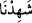

topluluğu, içinizden size”, sizden her fırkaya dünyada “ayetlerimi anlatan”
kitablarımı okuyan “ve bu gününüzle” yani kıyamet günüyle “karşılaşacağınız
hakkında sizi uyaran” Allah Teâlâ tarafından tâyin edilmiş “elçiler gelmedi mi?”
Bu şiddetli azarlamaya cevaben derler ki: “Kendi aleyhimize şâhidiz.” Evet bu
sayılanlar bize tebliğ edildi, derler. Bu sözler, onların küfürlerini ve azaba müstahak
olduklarının îtiraflarıdır.
“__WORD__” lafzının mazi (geçmiş zaman) fiil olması, şehadetin önceden olmasını
gerektirmez.
“Dünya hayatı kendilerini aldattı” da onlar îman etmediler. “Ve” ahirette
“kendilerinin” dünyada iken peygamberlerin getirdikleri âyetleri ve ikazları “kafir
olduklarına” dair kendileri aleyhinde “şâhidlik ettiler.”
Bu ifadeler, onların kötü düşüncelerini ve yanlış görüşlerini yermektedir. Çünkü onlar
dünya hayatına ve onun noksan lezzetlerine aldanarak ahiretten tamamıyle yüz
çevirmişlerdir. Sonunda da kâfir olduklarına dair kendileri aleyhinde şâhidlik etmek ve
ebedî azâba teslim olmak zorunda kalmışlardır. Bu ifadeler, aynı zamanda muhatabları
onların hâline düşmekten sakındırmak içindir.
Bilesin ki cinlerin ve insanların ilâhî emir ve yasaklarla mükellef oldukları ittifakla
sabittir. Ancak kendilerine gönderilen peygamberlerin hemcinsleri olması muhtemeldir.
Cebrail (a.s.) ve diğer bazı büyük meleklerin, meleklerin peygamberi olması gibi.
Beşerin seçkinleri, kendi cinslerinden biri olarak insanların peygamberidirler. Çünkü
aynı cinsten olanlar birbirlerine daha meyilli olurlar. İstifade ve ünsiyet hemcinsler
arasında daha fazladır.
Peygamberlerin, başka cinslerden olması da muhtemeldir. Meselâ cinlere gönderilen
peygamber insan olabilir. Bu, ise istifadeye mani değildir. Çünkü onların seçkinlerinin
o peygamberden istifade etmesi mümkündür. O zaman onlar, peygamberin elçisi olurlar.
Nitekim insanların seçkinleri de meleklerden istifade ederler.
Peygamberimiz Hz. Muhammed (s.a.)’in hem cinlere hem de insanlara peygamber
olarak gönderildiği hususunda icma vardır. Rasûlullah (s.a.) bu iki fırkadan her birini
ayrı ayrı Allah’a ve ahiret gününe inanmaya çağırmıştır. Halbuki ondan önceki
peygamberler sadece kendi toplumlarına gönderiliyorlardı. Süleyman (a.s.) da cinlere
genel anlamda peygamber olarak gönderilmemiştir. Bilakis, onlara tam olarak hakim
olmuş, zabt ve idâre etmiştir.
Âyetteki “içinizden elçiler” ifadesi, her toplumun peygamberinin kendilerinden
olması şeklindeki ilk manaya hamledilebilir. Dahhak ve ona tâbi olan bazı İslâm
âlimleri bu görüştedirler. Çünkü onlar “Bir zaruret olmadığı müddetçe âyetin zahirinden
ayrılmakta bir anlam yoktur.” demişlerdir.
“İçinizden elçiler” ifadesi, peygamberlerin başka cinslerden olabileceği şeklindeki
ikinci manaya da hamledilebilir. Bu görüşte olanlar, bu konuda icmâ olduğunu iddiâ
ederler. Bu görüşe göre beşer üstün tutulmaktadır. Peygamberler sadece insanlar
içinden gönderilmiştir. Fakat insanlara cinlerle birlikte hitap edildiğinde bu (insanların